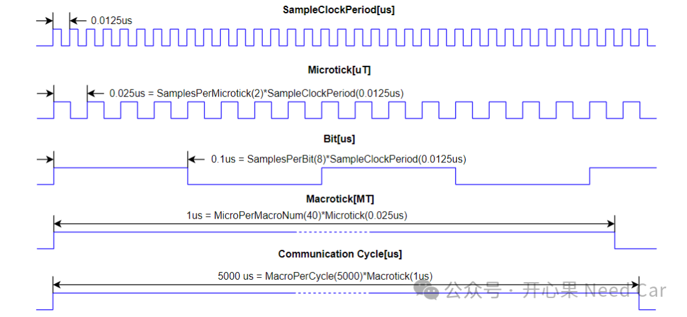

相对于学习其他总线，Flexray总线的学习成本比较高，有时，一些概念都会搞的迷迷糊糊。本文，继续讲解Flexray基础概念。
Flexray的通信中，与时间相关的参数比较多，需要深刻理解：1、微时钟（microtick）：microtick由Flexray模块获取得频率决定，eg：80MHz。那么就意味着一个tick = 1/80000000 = 0.0125us，如果需要经过2次采样（sample）得到一个microtick，也就是意味着一个microtick = SamplesPerMicrotick(2)*SampleClockPeriod(0.0125us) = 0.025us，微时钟单位：uT。2、一个Bit时间：SamplesPerBit(8)*SampleClockPeriod(0.0125us)，也就是，一个Bit时间 = 采样次数*时钟周期 = 8*0.0125 = 0.1us。3、宏时钟（macrotick）：macrotick是表示全局时间的最小粒度单位。包含一定数量的microtick（eg：40），所以macrotick = MicroPerMacroNum(40)*Microtick(0.025us) = 1us。macrotick的单位用MT表示。工程中，会约束每个通信循环的macrotick个数，eg：5000，也就是5ms。4、通信周期（Communication Cycle）：由一定数量的macrotick构成，eg: MacroPerCycle(5000)*Macrotick(1us) = 5000*1 = 5000us = 5ms。通信循环会对应一个参数：CycleCounter，用于计算当前所处的通信循环。CycleCounter的值循环变化：0->CycleCountMax（eg：63）->0，循环往复。而且，CycleCounter在每个通信循环的开始累加1，如果达到最大值，复位到0。对于基于时间通信的Flexray节点，microtick、macrotick、CycleCounter是非常重要的参数，这三个参数是确保节点精准通信的核心。对于Flexray，一个通信循环可以包含：静态段（Static Segment）、动态段（Dynamic Segment）、符号窗（Symbol Window）段以及网络空闲时间段（NIT：Network Idle Time）。其中，动态段和符号窗可选。本文描述一下Static Segment、Dynamic Segment以及NIT的时间参数设置，示意如下：
（一）静态段
如上图，静态段包含60个Slot，编号从1开始，即：Static Slot1~Static Slot 60，每个静态段包含的数据长度固定， eg：16 Word = 32 Bytes。
每个静态段持续时间61MT = 61us，其中，静态段的通道激活点ActionPointOffset = 9MT = 9us，如上图，动态段包含129个MiniSlot，动态段Slot编号＞静态段Slot编号，即：从静态段的编号向后递增，MiniSlot 61~MiniSlot 189，每个微时隙包含的数据长度 ≤ MaxDynPayloadLength（eg：127，单位:Word），即:每个动态段时隙（minislot）可设置的最大负载 ≤ 127*2 byte = 254 byte。其中，动态段的通道激活点ActionPointOffset = 3MT = 3us。如上图，NIT长度固定，eg：44MT = 44us。其中，相位校验起始点（Phase Correction Start）位于该段，eg：相对于通信起始位置偏移4981MT = 4981us。为什么需要设置CorrectionStart呢？在Flexray的网段内，不同的节点受温度、电压、时钟产品工艺等因素的影响，节点与节点之间会产生相位（Offset/phase differences）和频率偏差（Rate/frequencey differences）。在NIT中设置CorrectionStart，主要为了校正相位偏差，相位偏差值在奇循环（Odd Communication Cycle）补偿，即：通过测量的偏差值，在NIT中进行补偿，进而修正时间。工程上，我们常常会看到，多个PDU（有时也被称为Frame）共用一个Slot，怎么理解多个PDU共用一个Slot呢？如上图，每个通信循环周期为5ms。PDU#01和PDU#02共用静态段的S槽位，且两个PDU的通信周期都是10ms。既然PDU#01和PDU#02通信周期相同，那么，两者不能在同一时刻使用S槽位，怎么办呢？答：偏移两者使用静态段S槽位的起始时间，比如：PDU#01在第n个循环循环开始使用静态段S槽位，PDU#02在第n+1个循环循环开始使用静态段S槽位，由于两者通信周期均间隔10ms，因此，两者可以交替使用S槽位，即：两者可分时共用静态段S槽位。
同理，同一个静态slot可以分配给4个通信周期20ms的PDU使用，以此类推...
拓展补充：
1、Flexray的开发中，常常会听到KeySlotId，这个参数有什么用呢？当KeySlotId == SlotCounter时，对应的startup frame indicator和sync frame indicator会置位（=1）。一般，KeySlotId 会用于冷启动节点。一个节点只能配置一个同步帧，同一个Flexray网段，最多配置15个同步帧。2、对于基于TTD（Time-triggered distributed）通信的Flexray，同一网段内，至少需要配置两个冷启动节点（coldstart node），而且，冷启动节点也是同步节点（sync node）。点击下方关注，一起聊聊Autosar/嵌入式，如果需要，联系作者进群，给你更专业的解答